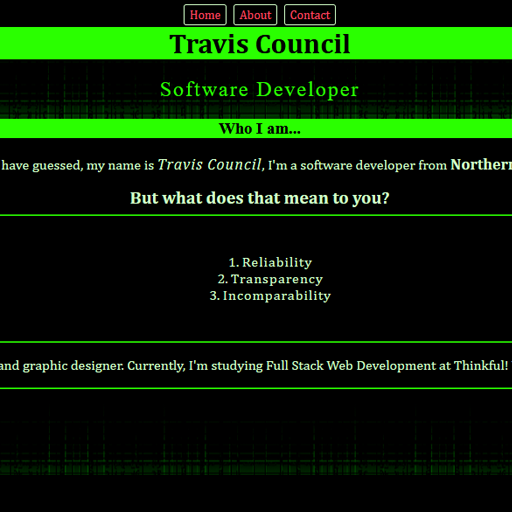
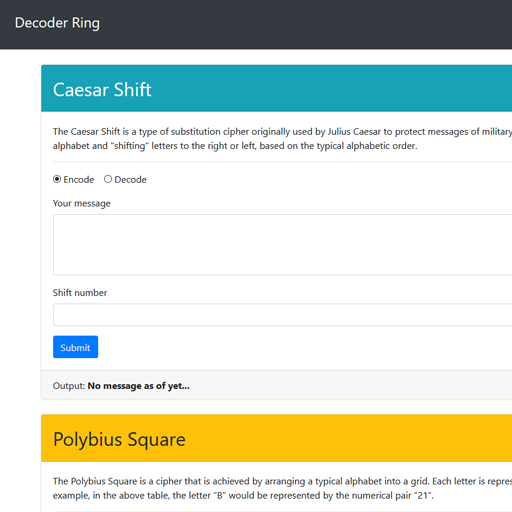
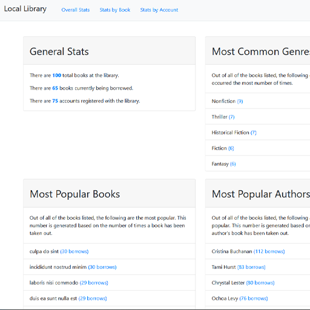

Projects
Simple Portfolio

This is just a simple portfolio.
It was the first website I made for the Thinkful bootcamp.
HTML, CSS
Github Repo
Live Site
The Decoder Ring

An application that encodes & decodes messages three different ways.
I made it for my first capstone project at Thinkful.
JavaScript
Github Repo
Live Site
Local Library Project

General stats of a local library on books and checkouts.
I made as part of the Thinkful bootcamp.
JavaScript
Github Repo
Live Site
Phaser 3 Game Template
This is a Empty Scene template setup to use the Phaser 3 framework.
I made it for myself as a quick start for Phaser 3 development.
HTML, CSS, JavaScript
Github Repo
Live Site